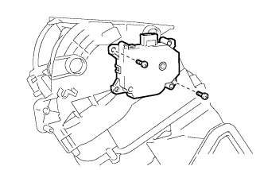
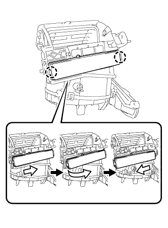
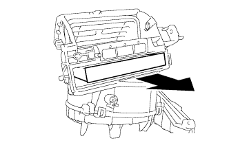
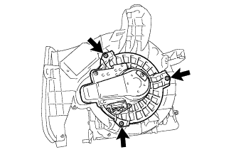

Blower Assembly Disassembly |
| 1. Recirculation Damper Servo Sub-assembly Removal |
 |
Remove the 2 screws and remove the recirculation damper servo.
| 2. Air Filter Case Removal |
 |
Disengage the 2 claws as shown in the illustration and remove the air filter case.
| 3. Clean Air Filter Removal |
 |
Remove the clean air filter from the blower assembly.
| 4. Blower Motor (with Fan) Removal |
 |
Remove the 3 screws and remove the blower motor (with fan).